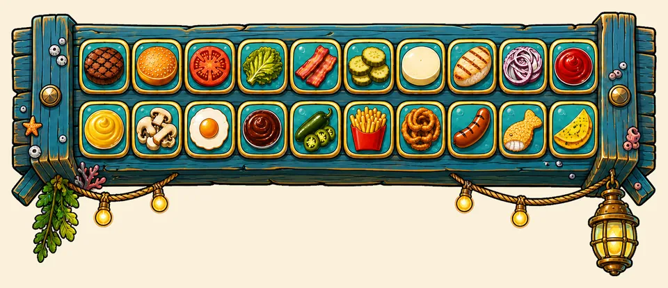

Чотири режими складання
Press Rush, Round 3D, Balance Tower 3D та Slice & Fit 3D кожен змінює те, що означає добре розміщення. Екран вибору режиму відкривається перед кожним забігом.
Натискайте, щоб складати. Зберіть сендвіч.
Складайте сендвіч по одному шару. Оберіть начинку, натисніть, щоб покласти її, і тримайте стопку рівно в чотирьох режимах: Press Rush, Round 3D, Balance Tower 3D та Slice & Fit 3D.
Чотири режими складання, двадцять інгредієнтів, замовлення за рецептами, звукові ефекти та збереження рахунків є в проєкті Unity. Публічної збірки ще немає.
 Press Rush
Замовлення
Press Rush
Замовлення
Оберіть начинку на панелі інгредієнтів. Панель рецептів показує, який сендвіч потрібен у поточному замовленні.
Шар рухається над стопкою, і один дотик фіксує його. Точне співпадіння зберігає повний розмір, а промах підрізає шар.
Кожен режим має власне правило: розмір, орбіту, баланс або обмежену кількість розрізів. Промах, повалена вежа чи закінчення розрізів завершують забіг.
Press Rush, Round 3D, Balance Tower 3D та Slice & Fit 3D кожен змінює те, що означає добре розміщення. Екран вибору режиму відкривається перед кожним забігом.
Перекриття, вага та вітер живлять індикатор стабільності, що показує СТАБІЛЬНО, ХИТАЄТЬСЯ або НЕБЕЗПЕКА. Повалена вежа завершує забіг.
Проведіть пальцем, щоб зрізати шар обмеженою кількістю розрізів, а потім вмістіть його в цільове кільце.
Двадцять інгредієнтів розміщені на панелі вибору, а рядок рецептів показує порядок із каталогу з 166 рецептів.
Дві ілюстровані послідовності по десять кадрів - місто в повітрі та підводне містечко - перетікають одна в одну, поки стопка росте.
Найкращі рахунки та кількість шарів зберігаються для кожного режиму на пристрої, а в збірці є сім звукових ефектів.
Дати виходу ще немає. Це цілі проєкту, а не обіцянки.
Ілюстрації та елементи інтерфейсу з проєкту Unity, а не записи геймплею.



Аркада зі складанням одним дотиком. Ви збираєте сендвічі шар за шаром у чотирьох режимах: Press Rush, Round 3D, Balance Tower 3D та Slice & Fit 3D. Ідея складання спільна з однією з ігор студії Burger Stack; тут шари - це інгредієнти сендвіча, а три режими тривимірні.
Це прототип. Проєкт налаштовано для Android та iOS, але публічної збірки, сторінки в магазині чи дати виходу ще немає.
Sandwich Stack створює WillowinWorlds, незалежна мобільна ігрова студія (див. її основні ігри). Стежте за WillowinWorlds у соцмережах, посилання на які є на цій сторінці, або напишіть на willowinworlds@gmail.com щоб запитати про оновлення Sandwich Stack.
Голосування відкриється в каналах студії. Стежте за WillowinWorlds, щоб долучитися.